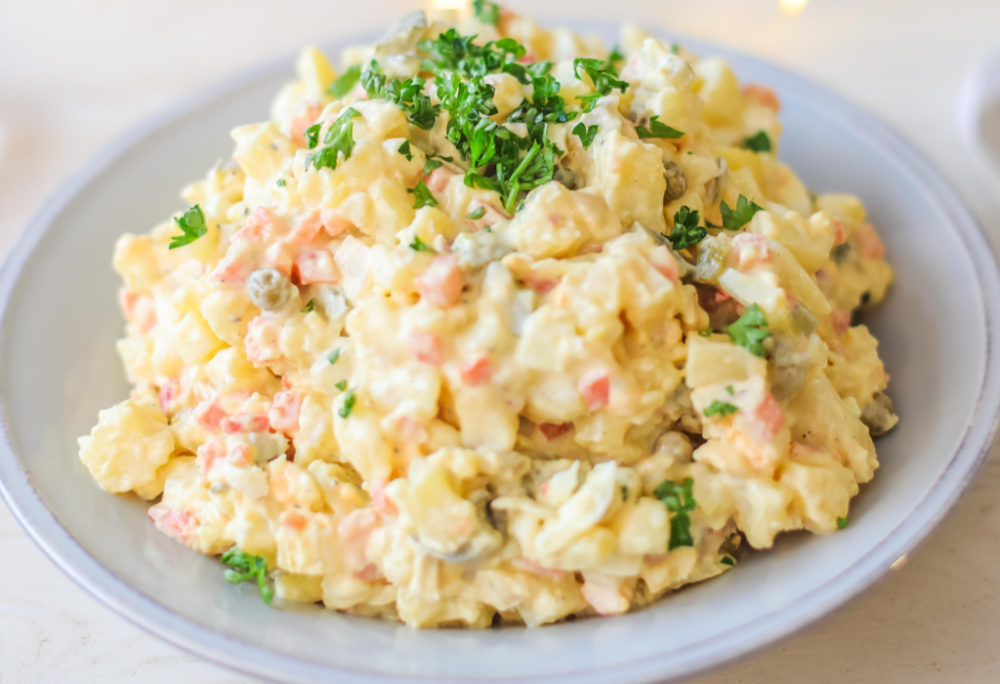

Tradiční český bramborový salát s kořenovou zeleninou, vejci a majonézou. Nezbytná součást svátečního stolu!
Brambory omyjeme a i se slupkou dáme vařit do hrnce s vroucí, osolenou vodou. Brambory nesmíme rozvařit, zkoušíme průběžně vidličkou. Když jdou zlehka zapíchnout, jsou hotové (asi 30 minut). Slijeme vodu a necháme vychladnout.
Mezitím dáme vařit mrkev, celer a petržel. Zeleninu omyjeme, oloupeme a můžeme překrojit na zhruba stejně veliké kousky (hlavně celer), aby se vařila stejně dlouho. Vaříme v osolené vodě asi 20 minut. Zkoušíme nožem, pokud je zelenina měkká, vyjmeme ji dřív a ostatní necháme dovařit.
Ke konci varu přidáme hrášek a krátce povaříme zhruba 5 minut. Všechnu zeleninu scedíme a necháme vychladnout.
Vejce uvaříme natvrdo (asi 10 minut ve vroucí vodě). Necháme vychladnout a oloupeme.
Vychladlé brambory oloupeme. Brambory i vejce protlačíme přes kostičkovací mřížku nebo nakrájíme na kostky. Vychladlou zeleninu také nakrájíme na kostky.
V míse smícháme kostky brambor, vajec, zeleniny a hrášek. Přidáme na drobno nakrájené kyselé okurky. Osolíme a opepříme.
Cibuli oloupeme a nakrájíme najemno, spaříme vroucí vodou a necháme vychladnout. Poté přidáme do mísy.
Nakonec oloupeme jablko, které nastrouháme najemno a přidáme do mísy.
Přidáme majonézu a lák z okurek. Celou směs důkladně, ale zlehka promícháme, abychom ze salátu neměli kaši. Dochutíme solí a pepřem, případně citronovou šťávou nebo octem.
Před podáváním je nejlepší nechat salát odležet v lednici, klidně i do druhého dne, aby se chutě propojily.